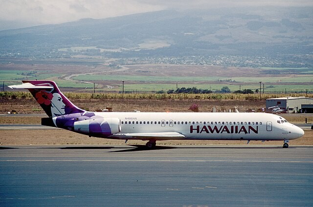

Kahului Airport (OGG)

Kahului Airport is Maui’s primary flight hub. Its code, OGG, doesn’t refer to geography or any place name but to a person: Bertram J. Hogg, a pioneering early inter-island aviator. Hogg flew for Inter-Island Airways, which later became Hawaiian Airlines (now part of Alaska Airlines) and served as one of its key flight instructors. The Kauaʻi-born pilot earned the “OGG” designation for his work testing Maui’s new radio-navigation equipment, a rare tribute.
The site where the airport sits today began during World War II, when the U.S. Navy constructed Naval Air Station Kahului in 1942. After the war ended, the military turned over the facility, and the Territory of Hawaiʻi began converting it into a modern civilian airport. Kahului Airport officially opened to civilian air travel in June 1952, replacing Puʻunēnē Airport.
The new airport represented Maui’s shift toward a more connected island. Its longer runways, reliable operations, and room for expansion allowed Maui to enter the jet age as direct routes linked Kahului with Honolulu and the continental United States. Over the decades, Kahului Airport grew into one of Hawaiʻi’s busiest, serving as the conduit that delivered industry, people, and cargo to an ever-expanding Valley Isle.
Most people who pass through OGG today, residents returning home, families visiting, travelers connecting across the Pacific, have little sense of the airport’s wartime origins or why its code carries a double “G.” Although “HOG” would’ve made more sense, the air traffic code was already taken by Holguin, Cuba. As such OGG became the moniker.
It is Maui’s link to the rest of Hawaiʻi and the broader world, built on wartime foundations and carrying the legacy of a local aviator. Every departure and arrival through OGG continues a story that began long before the modern terminal — with a pilot whose initials still greet every traveler who comes to Maui. Near Gate 19, the State of Hawaiʻi installed an 8-foot-tall, 42-foot-wide display honoring Hogg, from his childhood watching planes land near Nāwiliwili, Kauaʻi to flying Hawaiian Airlines’ first trans-Pacific service in a DC-6. It’s worth a visit to appreciate the pilot who helped push local aviation forward.
